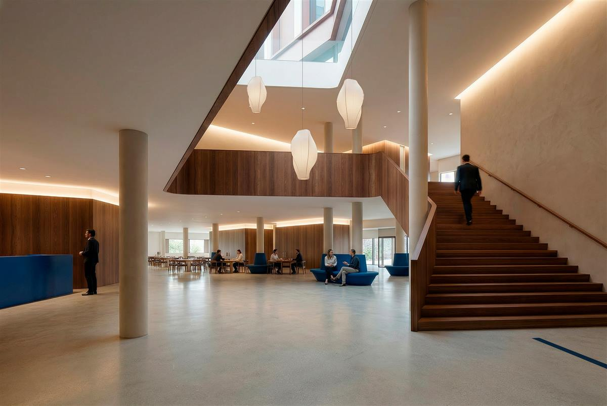
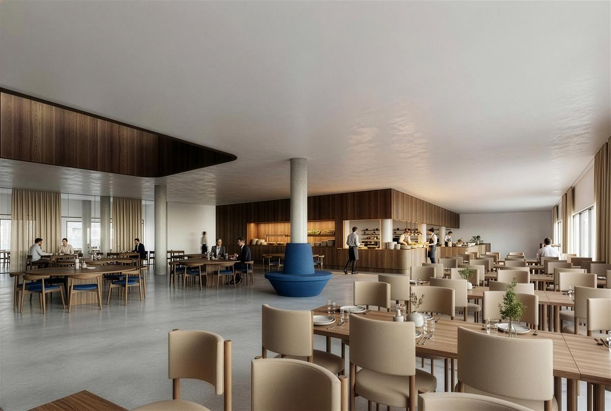
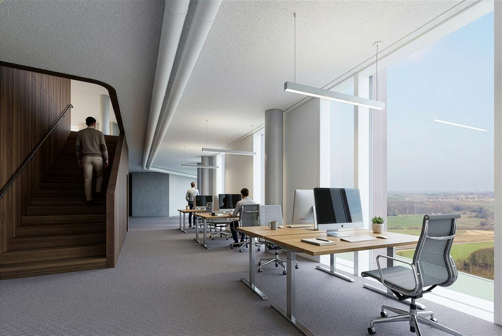

SKYTOWER
Hvor byen møder
landskabet
Erhvervsdomicil · Skejby, Aarhus
01 — Vision
I mødet mellem
by og landskab
Ved overgangen mellem Aarhus' nordlige erhvervsområder og det åbne landskab omkring Egådalen rejser Skytower sig som en markant bebyggelse i mødet mellem by og landskab.
Base og volumen
Projektet tager afsæt i områdets særlige topografi og synlighed. Bygningen er disponeret som en base, der optager terrænets fald, mens de overliggende volumener gradvist trapper ned mod nord. Herved skabes en samlet bebyggelse, der forholder sig til både den nære skala omkring ankomst- og opholdsarealerne og de store landskabelige sammenhænge, som omgiver stedet.

Facade og materialitet
Arkitekturen er udviklet med fokus på proportionering og facadebearbejdning. Bygningens volumen opdeles gennem en lagdelt facadeopbygning, hvor vinduesfelter, horisontale bånd og lodrette facadeelementer skaber dybde og rytme. De horisontale bånd nedbryder højden og giver facaden en menneskelig skala, mens de lodrette elementer samler bebyggelsen og understreger dens vertikale karakter.
Basen udføres i natursten, der forankrer bygningen i terrænet og giver bebyggelsen tyngde. Herover beklædes facaderne med bronzefarvede aluminiumselementer, hvis varme metalliske overflade reagerer på himmel, lys og vejr. Facaden ændrer karakter i løbet af dagen, hvor skygger og refleksioner fremhæver bygningens relief og dybde.
Gårdrummet
Mellem bebyggelsens volumener etableres et fælles gårdrum, der danner et grønt opholdsrum i projektets midte. Her skabes et beskyttet miljø, som står i kontrast til de store infrastrukturelle rum og landskabelige vidder, der omgiver området.
Skytower er formet af spændingsfeltet mellem by og landskab — en præcis bearbejdning af skala, materialitet og lys, der både indskriver sig i Aarhus' skyline og forankrer sig i stedets særlige topografi.
02 — Rum & Faciliteter
Rum med udsigt
og karakter


03 — Beliggenhed
Lange kig til landskab
og horisont
Placeringen giver bygningen en særlig orientering mod omgivelserne — ved overgangen mellem Aarhus' nordlige erhvervsområder og det åbne landskab omkring Egådalen.
Øst
Mod øst åbner etagerne sig mod Aarhusbugten og byens silhuet.
Vest
Mod vest strækker udsigten sig over det karakteristiske morænelandskab omkring Egådalen.
De lange kig til landskab og horisont er en væsentlig kvalitet i projektet og bidrager til oplevelsen af bygningen som en del af en større geografisk sammenhæng.
04 — Galleri
Bygningen i billeder
05 — Kontakt
Interesseret i
at høre mere?
Henvendelser vedrørende udlejning besvares pr. e-mail.